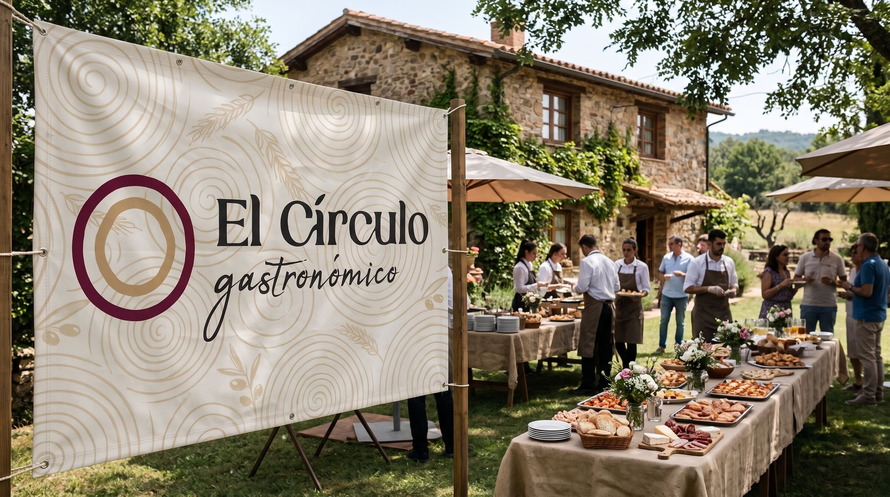
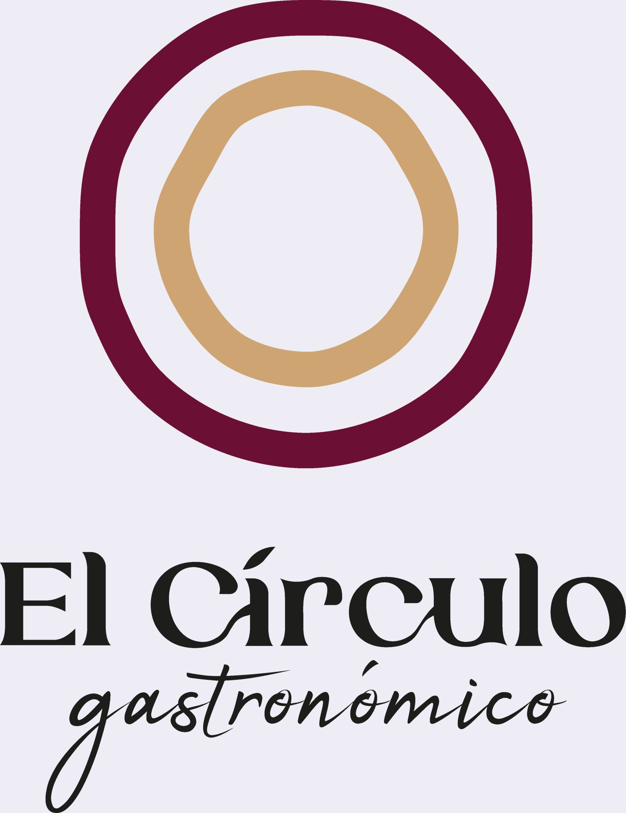
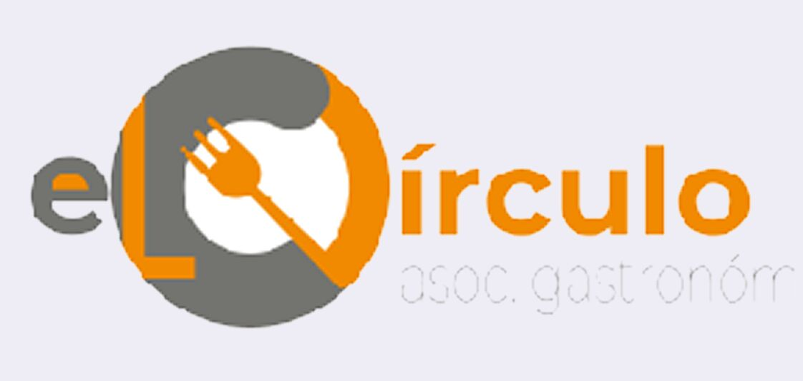
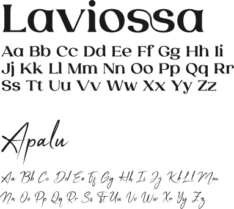
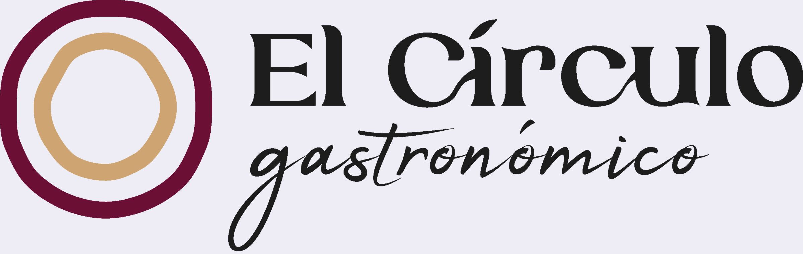
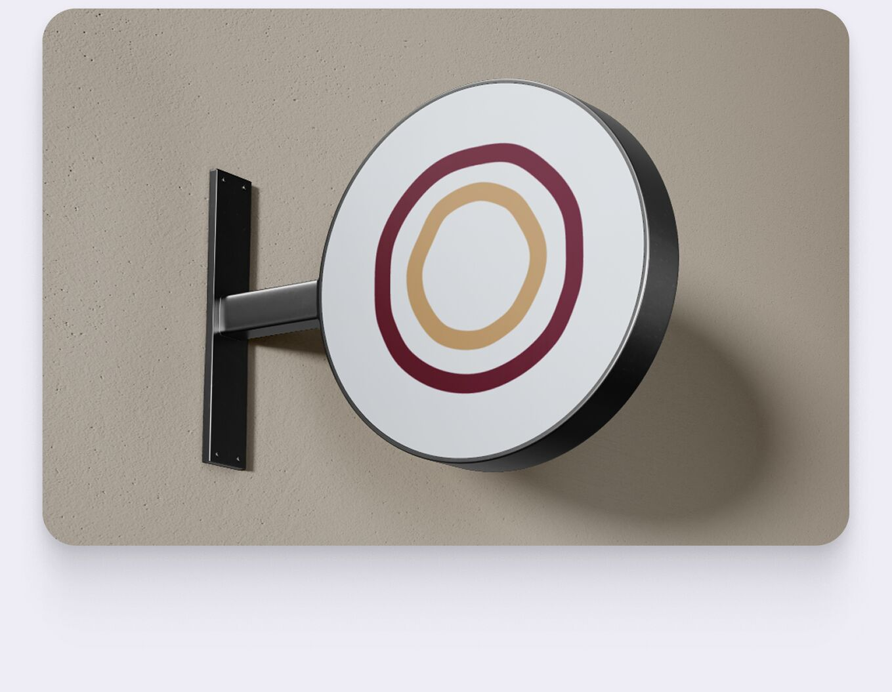
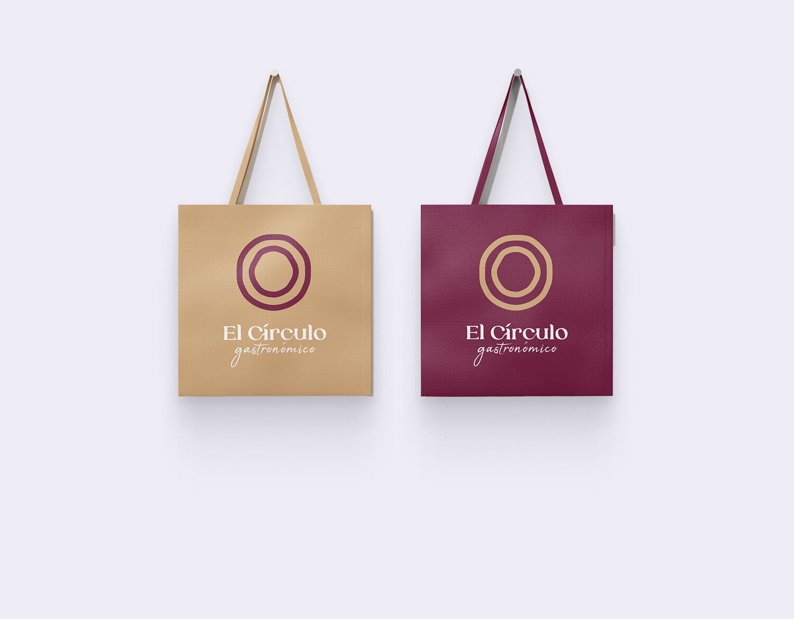
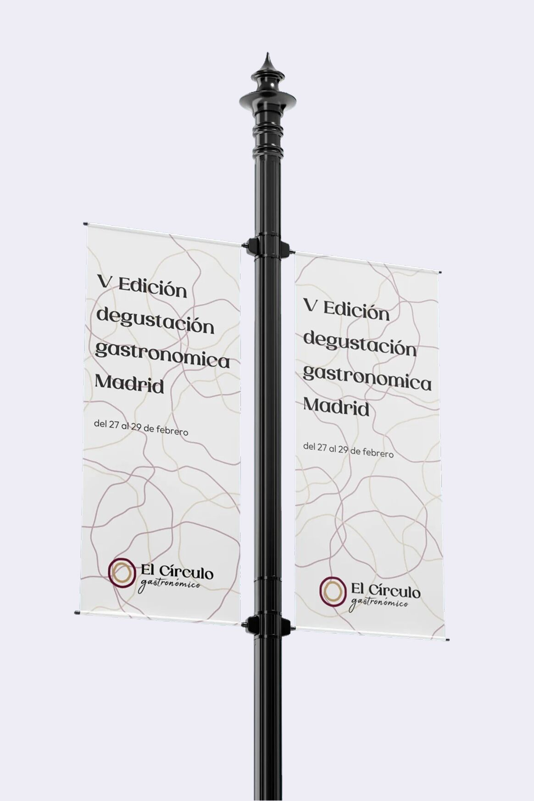
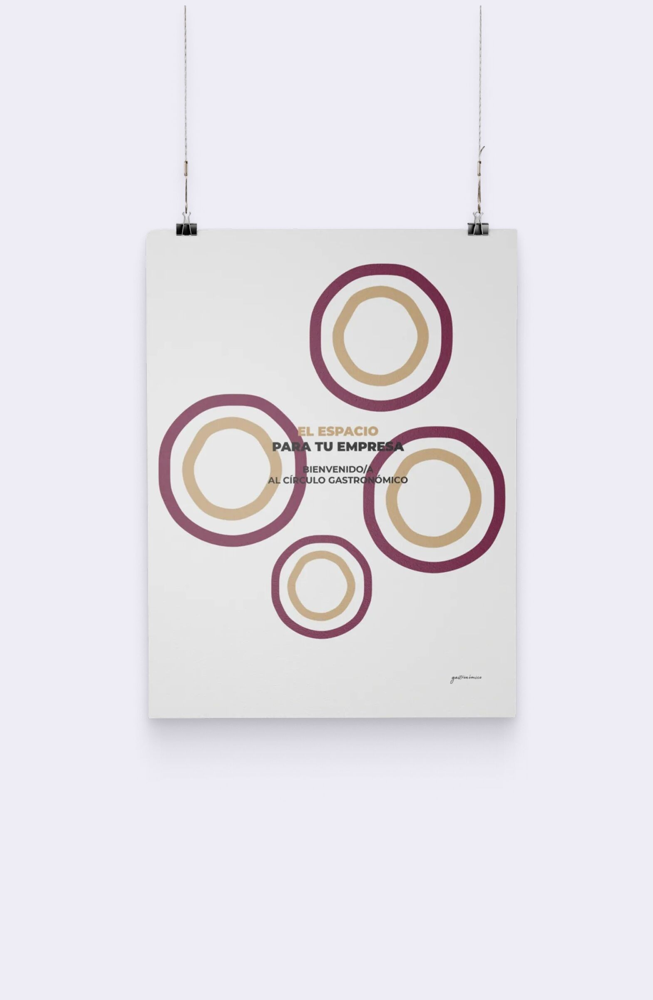

· 2026 - portfolio / ARZMZ ©
MADRID ⇀ WORLDWIDE

CATEGORÍA
Branding
AÑO
2024
ROL
Diseñador Gráfico
CLIENTE
El Círculo Gastronómico (empresa asociada a Bellalux)
HERRAMIENTAS
Branding · Diseño de logotipo · Imagen de marca
Rediseño de la identidad visual de El Círculo Gastronómico - una imagen que refleja creatividad y sofisticación.
La nueva paleta de colores evoca la gastronomía y la forma orgánica del isotipo alude a la comida, potenciando la presencia de la marca en el mercado.
Para este proyecto asumí el rol de Director de Arte, ya que era el único responsable del departamento gráfico y visual de la empresa.
El logotipo anterior estaba desfasado: demasiados elementos lo sobrecargaban visualmente, perdía legibilidad, no funcionaba a una sola tinta (en blanco o en negro) y resultaba poco práctico en el uso diario de la marca.
Renovar la identidad de El Círculo con una imagen más limpia, legible y versátil, que reflejase creatividad y sofisticación.
Al ser una empresa asociada a Bellalux, no fue un encargo externo sino parte de mi puesto: sin plazo fijo, compaginándolo con el resto de trabajos y siendo el único diseñador.
Igual que con Bellalux, el cambio fue una propuesta mía al ver que el logotipo anterior no funcionaba.
Imágenes del proceso




Caso de estudio
La forma orgánica del isotipo, dos anillos concéntricos, alude a la comida y aporta a la marca una imagen cercana y creativa.
El logotipo anterior estaba sobrecargado de elementos, no funcionaba a una sola tinta (en blanco o en negro) y perdía legibilidad.
Seleccioné Laviossa como tipografía principal porque combina formas orgánicas con una elegancia distintiva. Como secundaria elegí Apalu: dispuesta de esta manera, transmite una exclusividad refinada, similar a una firma.
La paleta, con el granate #6C0F34 y el beige #CEA572, evoca la gastronomía. La versión horizontal permite usar la marca en formatos alargados como lonas, rótulos o cabeceras.
Decisiones de diseño
Isotipo orgánico: dos anillos de trazo irregular que aluden a la comida y al plato.
Paleta gastronómica: granate y beige para una imagen cálida y sofisticada.
Tipografías con carácter: Laviossa aporta elegancia y Apalu, con aire de firma, exclusividad.



